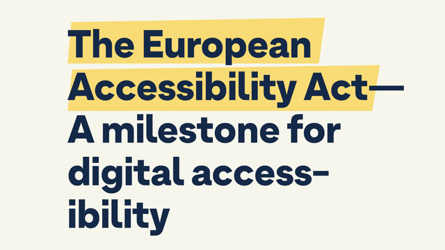
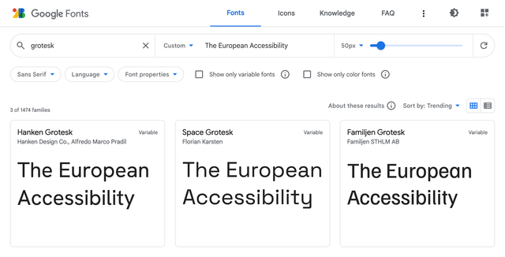
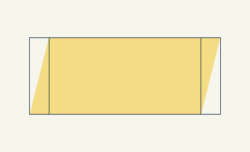

I often challenge myself to see if something is possible to implement in a sensible way or to play around with new Web platform features. I end up with a demo but rarely share it with anyone. Now that I have a blog, nothing stops me from doing it publicly! It sounds a bit creepy, but there you go.
Recently Sacha Greif challenged his followers with a tweet:
CSS challenge: I’m curious, can you do this kind of highlighter effect using only CSS, while adapting to text changes?
And a picture of some nice-looking headline with a highlight:

As you can see, this highlight is rather custom for this specific text, mainly because of the slight rotation. And though everything is possible when you’re drawing with CSS, I wanted to create something more or less practical.
So, I took the bait and started coding.
Grotesk font
First, I needed to find a font used in the picture. Not the exact one, but something similar and available on Google Fonts. I used “The European Accessibility” as a sample and “grotesk” as a keyword. I got lucky as the first result Hanken Grotesk looked pretty close, especially with the bolder 900 weight.

I picked the colors from the picture, played with the line height, and got a good starting point. Be careful with viewport units for the font size, though. I used it here only for demo purposes. In real life, it would stop users from scaling the text, which is an accessibility concern.
body {
margin: 0;
display: grid;
place-items: center;
background-color: #f6f6ec;
font-family: 'Hanken Grotesk', sans-serif;
}
h1 {
max-width: 18ch;
color: #142847;
line-height: 1.1;
font-size: 7.5vw;
}<h1>
The European Accessibility Act—<br>
A milestone for digital accessibility
</h1>For similarity’s sake, I also had to use <br> in combination with max-width: 18ch, though it’s usually not a good idea in real-life cases. But I think I managed to find a balance between practicality and the original text look.
Subsetting
To use Hanken Grotesk font in the demo, I took the usual HTML snippet from Google Fonts: two preconnects and the font stylesheet.
<link
rel="preconnect"
href="https://fonts.googleapis.com"
>
<link
rel="preconnect"
href="https://fonts.gstatic.com"
crossorigin
>
<link
rel="stylesheet"
href="https://fonts.googleapis.com/css2?…"
>But since it was just a single line of text, not the whole website, I added one more text GET parameter to the URL to deliver a custom font version containing only needed glyphs. 3 KB instead of 12 KB, not bad! You can also subset fonts with glyphhanger if you prefer to serve them yourself, as I do. But that would be too much for a simple demo.
text=aAbcdeEfghilmnoprstTuy%20%E2%80%94This weird-looking value is the text of our headline, but with the letters sorted and duplicates removed. I also URL-encoded some symbols: %20 is the space, and %E2%80%94 is the em dash. You don’t need to sort or deduplicate the value for such a simple case, but why not.
Alright, enough with the text. Let’s see how I highlighted it.
Remarkable mark
The <mark> element is the obvious choice to highlight anything in a text. It even comes with built-in styles similar to what we have in the picture. But not that similar, so I replaced it with a nicer yellow. I also had to inherit the color from the header since it’s set explicitly to black in the browser styles.
mark {
background-color: #f8db75;
color: inherit;
}It looked pretty close already, but the whole point of this challenge was the side angles.
Skewed background
Unfortunately, there’s no way to skew the background, so I had to construct it from multiple parts using gradients: left and right rectangles with a diagonal gradient and a part in between with just a fill.

Since the gradient replaces the background color, I set it to transparent. Then I passed three linear gradients separated by commas to the background-image property.
mark {
background-color: transparent;
background-image:
linear-gradient(
to bottom right,
transparent 50%,
#f8db75 50% 100%
),
linear-gradient(
to right,
#f8db75,
#f8db75
),
linear-gradient(
to top left,
transparent 50%,
#f8db75 50%
)
;
}- The first goes to the bottom right, from transparent to yellow, with a 50% hard stop.
- The second goes to the right, but it could’ve been any direction since it’s just a yellow fill.
- The third goes to the top left, just like the first one but in the opposite direction.
The gradients with specific directions like to bottom right go precisely from one corner to another, no matter the element’s shape. This was very convenient because the skew could be adjusted by changing the rectangle’s width.
It was just a first step: by default, gradients overlap each other and repeat all over the place. To position them as on the scheme above, I needed to shape them with background-size and background-position and, of course, stop the repeating.
mark {
background-size:
0.25em 1em,
calc(100% - 0.25em * 2 + 1px) 1em,
0.25em 1em
;
background-position:
left center,
center,
right center
;
background-repeat: no-repeat;
}Like in the previous case, I used multiple values separated by commas. 0.25em is the width of the side rectangles, and 1em is the height. The width of the middle rectangle is the width of the whole element minus the width of the sides. I had to add 1px to the width to make the middle rectangle overlap the sides because, otherwise, at specific font sizes and page scaling, there would be a small gap in Chrome and Firefox.
Positioning background was fairly simple:
- Left side goes to the left and stays centered vertically.
- Middle part stays in the center: a single keyword means
center center. - Right side goes to the right and stays centered vertically, too.
Once the background was done, I did a minor refactoring and used a few custom properties to make the highlight easily adjustable. But first, let’s look at the result!
mark {
--mark-color: #f8db75;
--mark-skew: 0.25em;
--mark-height: 1em;
--mark-overlap: 0.3em;
margin-inline: calc(var(--mark-overlap) * -1);
padding-inline: var(--mark-overlap);
background-color: transparent;
background-image:
linear-gradient(
to bottom right,
transparent 50%,
var(--mark-color) 50%
),
linear-gradient(
var(--mark-color),
var(--mark-color)
),
linear-gradient(
to top left,
transparent 50%,
var(--mark-color) 50%
)
;
background-size:
var(--mark-skew) var(--mark-height),
calc(100% - var(--mark-skew) * 2 + 1px) var(--mark-height),
var(--mark-skew) var(--mark-height)
;
background-position:
left center,
center,
right center
;
background-repeat: no-repeat;
color: inherit;
}To make it closer to the picture, I extended the sides to slightly overlap the em dash. I added padding-inline for padding on the sides and margin-inline with the same value but negative to compensate for the padding.
It looked close at that point, apart from one tiny detail.
Decoration break
From the beginning, I assumed that the whole highlight is a single element that breaks into multiple lines or stays in a single line, depending on the text width. But in the picture, we have side angles on every line! Did it mean I had to use <mark> elements for every line? Fortunately, no.
There’s a way to control how the box breaks into multiple lines or, to be precise, how its decoration breaks. It’s conveniently called box-decoration-break, and the clone value did precisely what I needed.
mark {
-webkit-box-decoration-break: clone;
box-decoration-break: clone;
}I had to use the -webkit- prefix for it to work in Chrome and Safari, but the result was just stunning: every line of the <mark> element was decorated like its own element.
As Roman Komarov once said (I hope I’m not making it up): if you see a challenge, don’t look at the implementations. Try to code it yourself and only then compare it. This way, you’ll learn more. I guess it’s too late with this article, but keep this idea in mind for the next challenge!
Last updated on